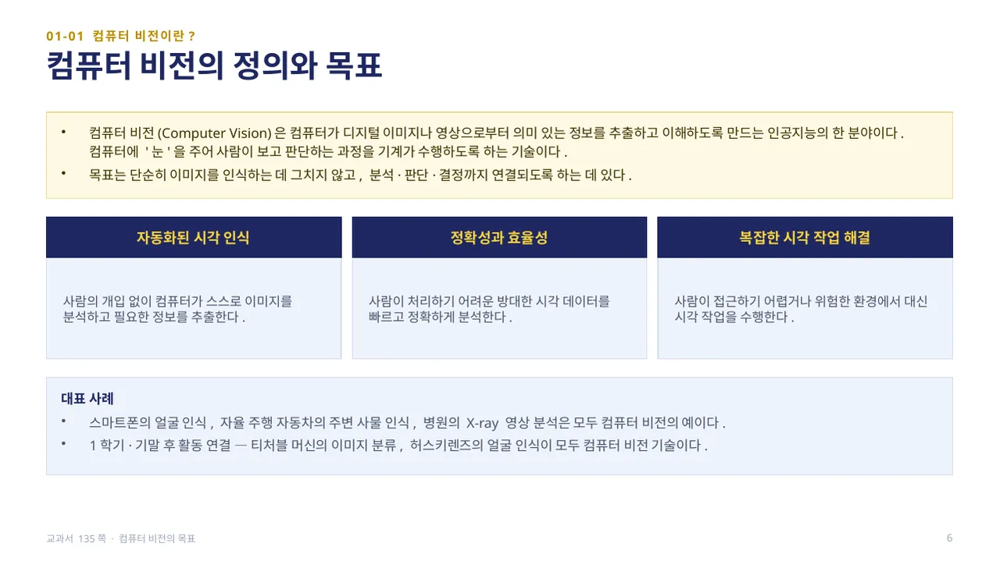
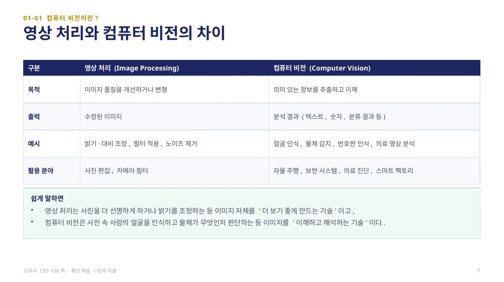
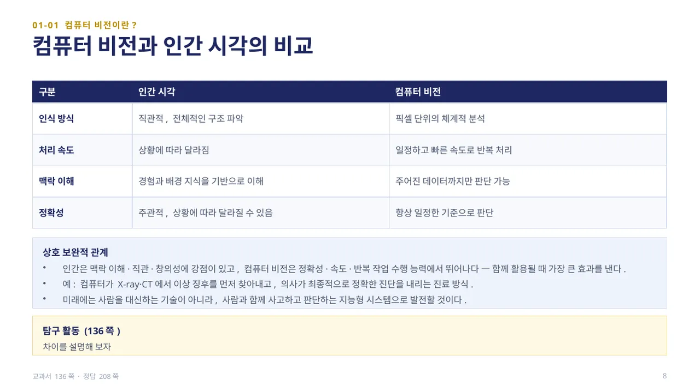
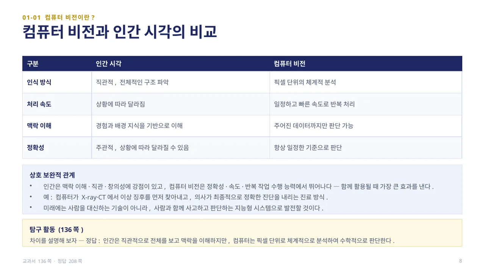
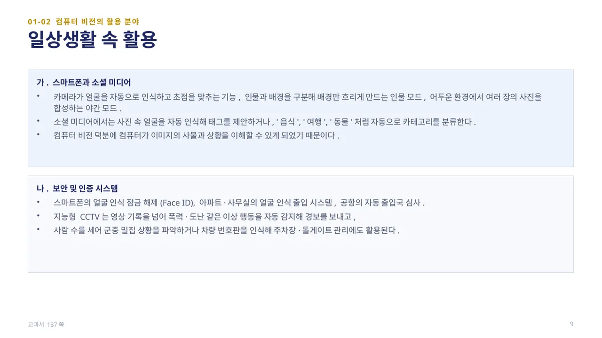
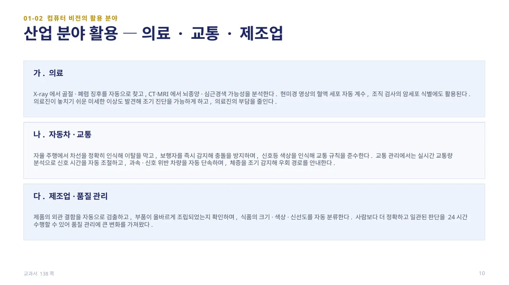
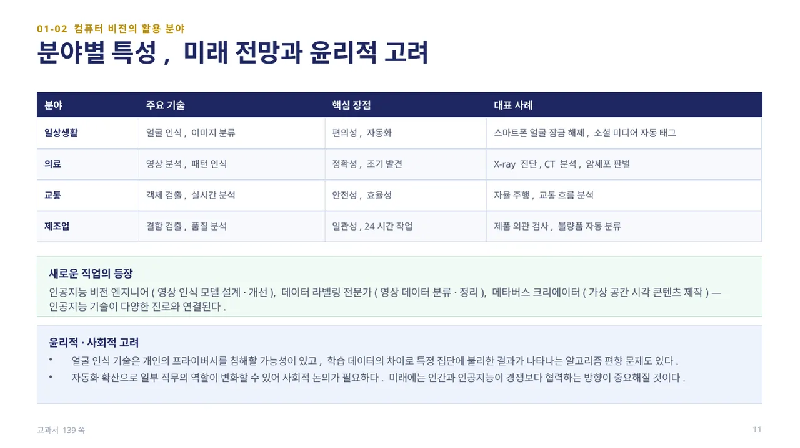
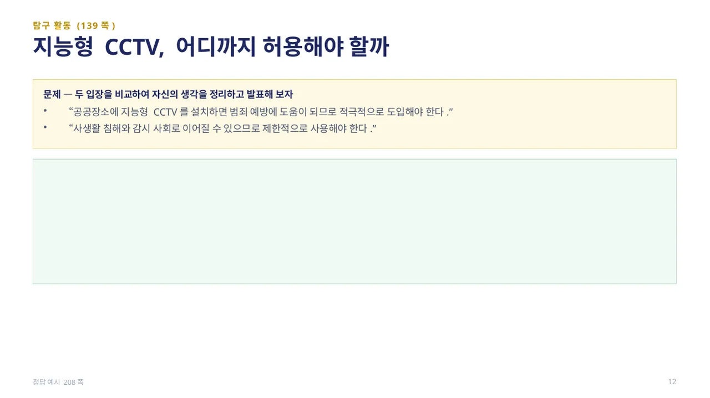
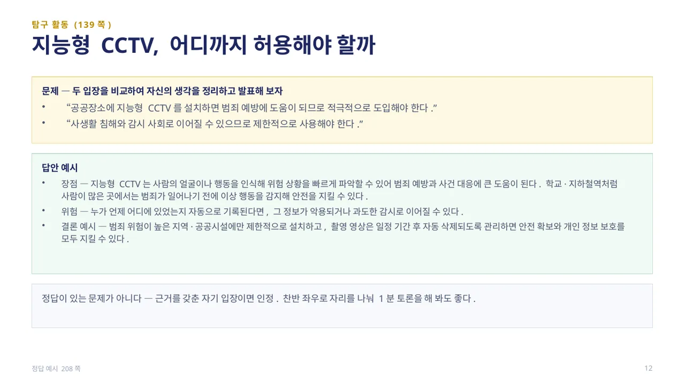

중단원 01. 컴퓨터 비전 개요 · 134–146쪽 소단원 01. 컴퓨터 비전이란?· 135–136쪽
중단원 01. 컴퓨터 비전 개요 · 134–146쪽 소단원 02. 컴퓨터 비전의 활용 분야· 137–139쪽
이 웹 주제의 연계 범위: 134–139쪽
교과서 134–139쪽
컴퓨터 비전과 영상 처리
사진을 다듬는 것과 사진의 의미를 판단하는 것을 구별하세요.

컴퓨터 비전(Computer Vision)은 컴퓨터가 디지털 이미지나 영상으로부터 의미 있는 정보를 추출하고 이해하도록 만드는 인공지능의 한 분야입니다. 컴퓨터에 ‘눈’을 달아 주어, 사람이 보고 판단하는 과정을 기계가 대신 수행하게 하는 기술입니다.
컴퓨터 비전의 목표는 단순히 이미지를 인식하는 데 그치지 않고, 분석·판단·결정까지 연결되는 것입니다. 사람의 개입 없이 스스로 이미지를 분석하는 자동화된 시각 인식, 방대한 시각 데이터를 빠르고 정확하게 분석하는 정확성과 효율성, 사람이 접근하기 어렵거나 위험한 환경에서 대신 수행하는 복잡한 시각 작업 해결이 핵심입니다.
스마트폰의 얼굴 인식, 자율 주행 자동차의 주변 사물 인식, 병원의 X-ray 영상 분석이 모두 컴퓨터 비전의 사례입니다. (교과서 135쪽)

영상 처리(Image Processing)는 이미지 품질을 개선하거나 변형하는 것이 목적이며 출력은 수정된 이미지입니다(예: 밝기·대비 조정, 필터 적용, 노이즈 제거). 사진 편집, 카메라 필터처럼 이미지 자체를 더 보기 좋게 만드는 데 쓰입니다.
컴퓨터 비전(Computer Vision)은 의미 있는 정보를 추출하고 이해하는 것이 목적이며 출력은 분석 결과(텍스트, 숫자, 분류 결과 등)입니다(예: 얼굴 인식, 물체 감지, 번호판 인식, 의료 영상 분석). 자율 주행, 보안 시스템, 의료 진단, 스마트 팩토리처럼 이미지를 ‘이해하고 해석’해야 하는 분야에 쓰입니다.
쉽게 말해 영상 처리는 사진을 더 보기 좋게 만드는 기술이고, 컴퓨터 비전은 사진 속 의미를 이해하고 해석하는 기술입니다. (교과서 135~136쪽)

인간 시각과 컴퓨터 비전을 비교해 봅니다. 인식 방식은 인간이 직관적·전체적인 구조 파악, 컴퓨터 비전은 픽셀 단위의 체계적 분석입니다. 처리 속도는 인간이 상황에 따라 달라지지만 컴퓨터 비전은 일정하고 빠른 속도로 반복 처리합니다.
맥락 이해는 인간이 경험과 배경 지식을 바탕으로 이해하지만 컴퓨터 비전은 주어진 데이터까지만 판단할 수 있습니다. 정확성도 인간은 주관적이고 상황에 따라 달라지지만 컴퓨터 비전은 항상 일정한 기준으로 판단합니다. 인간은 맥락 이해·직관·창의성에 강점이 있고 컴퓨터 비전은 정확성·속도·반복 작업 수행 능력에서 뛰어나, 함께 활용될 때 가장 큰 효과를 냅니다(예: 컴퓨터가 X-ray·CT에서 이상 징후를 먼저 찾아내고, 의사가 최종 진단을 내리는 방식).
탐구 활동(136쪽): 인간 시각과 컴퓨터 비전의 차이를 설명해 봅니다.
답 보기답 숨기기

답 — 인간은 직관적으로 전체를 보고 맥락을 이해하지만, 컴퓨터는 픽셀 단위로 체계적으로 분석하여 수학적으로 판단합니다. (정답 208쪽)

스마트폰 카메라는 얼굴을 자동으로 인식해 초점을 맞추고, 인물과 배경을 구분해 배경만 흐리게 만드는 인물 모드, 어두운 환경에서 여러 장을 합성하는 야간 모드에 컴퓨터 비전을 활용합니다. 소셜 미디어는 사진 속 얼굴을 자동 인식해 태그를 제안하거나 ‘음식’, ‘여행’, ‘동물’처럼 자동으로 카테고리를 분류합니다.
보안·인증 시스템에서도 널리 쓰입니다. 스마트폰의 얼굴 인식 잠금 해제(Face ID), 아파트·사무실의 얼굴 인식 출입 시스템, 공항의 자동 출입국 심사가 그 예입니다. 지능형 CCTV는 폭력·도난 같은 이상 행동을 자동 감지해 경보를 보내고, 사람 수를 세어 군중 밀집 상황을 파악하거나 차량 번호판을 인식해 주차장·톨게이트 관리에도 활용됩니다. (교과서 137쪽)

의료 분야에서는 X-ray에서 골절·폐렴 징후를 자동으로 찾고, CT·MRI에서 뇌종양·심근경색 가능성을 분석합니다. 현미경 영상의 혈액 세포 자동 계수, 조직 검사의 암세포 식별에도 활용되어 의료진이 놓치기 쉬운 미세한 이상을 발견하고 조기 진단을 돕습니다.
자동차·교통 분야에서는 자율 주행이 차선을 인식해 이탈을 막고, 보행자를 감지해 충돌을 방지하며, 신호등 색상을 인식합니다. 교통 관리에서는 실시간 교통량 분석으로 신호 시간을 자동 조절하고 과속·신호 위반 차량을 자동 단속합니다. 제조업에서는 제품의 외관 결함을 자동으로 검출하고, 부품 조립 여부를 확인하며, 식품의 크기·색상·신선도를 자동 분류해 24시간 일관된 품질 관리를 수행합니다. (교과서 138쪽)

일상생활은 얼굴 인식·이미지 분류 기술로 편의성·자동화를 얻고, 의료는 영상 분석·패턴 인식으로 정확성·조기 발견을 얻습니다. 교통은 객체 검출·실시간 분석으로 안전성·효율성을, 제조업은 결함 검출·품질 분석으로 일관성·24시간 작업을 얻습니다.
컴퓨터 비전 기술의 확산은 인공지능 비전 엔지니어(영상 인식 모델 설계·개선), 데이터 라벨링 전문가(영상 데이터 분류·정리), 메타버스 크리에이터(가상 공간 시각 콘텐츠 제작) 같은 새로운 진로와도 연결됩니다. 다만 얼굴 인식 기술은 개인의 프라이버시를 침해할 가능성이 있고, 학습 데이터의 차이로 특정 집단에 불리한 결과가 나타나는 알고리즘 편향 문제도 있습니다. 자동화 확산으로 일부 직무가 변화할 수 있어 사회적 논의가 필요하며, 인간과 인공지능이 경쟁보다 협력하는 방향이 중요합니다. (교과서 139쪽)

탐구 활동(139쪽): “공공장소에 지능형 CCTV를 설치하면 범죄 예방에 도움이 되므로 적극적으로 도입해야 한다”는 입장과 “사생활 침해와 감시 사회로 이어질 수 있으므로 제한적으로 사용해야 한다”는 입장을 비교하여 자신의 생각을 정리하고 발표해 봅니다.
답 보기답 숨기기

답안 예시 — 지능형 CCTV는 사람의 얼굴이나 행동을 인식해 위험 상황을 빠르게 파악할 수 있어 범죄 예방과 사건 대응에 큰 도움이 됩니다. 학교·지하철역처럼 사람이 많은 곳에서는 범죄가 일어나기 전에 이상 행동을 감지해 안전을 지킬 수 있습니다. 하지만 누가 언제 어디에 있었는지 자동으로 기록된다면 그 정보가 악용되거나 과도한 감시로 이어질 위험도 있습니다. 범죄 위험이 높은 지역·공공시설에만 제한적으로 설치하고, 촬영 영상은 일정 기간 후 자동 삭제되도록 관리하면 안전 확보와 개인 정보 보호를 모두 지킬 수 있습니다. 이 문제는 정답이 정해진 것이 아니라 근거를 갖춘 자기 입장이면 됩니다. (정답 예시 208쪽)
 인공지능 파이썬 실무
인공지능 파이썬 실무